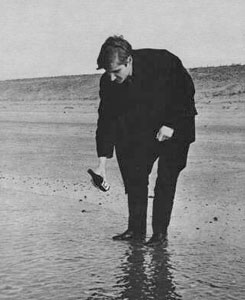
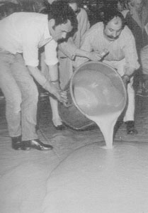
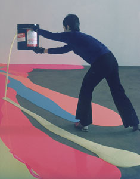

back
to: mechanics radical
art
to pour

Wim T. Schippers emptying a bottle of lemonade
into the North Sea near Petten, 1963
[Re-enactment of 1961 performance]
Mierle Laderman Ukeles:
Maintenance Art Performance, 1973-1974

César: Expansion, 1967
Lynda Benglis pouring latex, 1969
Reference
David Bourdon: "Fling, Dribble and Dip." Life Magazine, February 27, 1970.